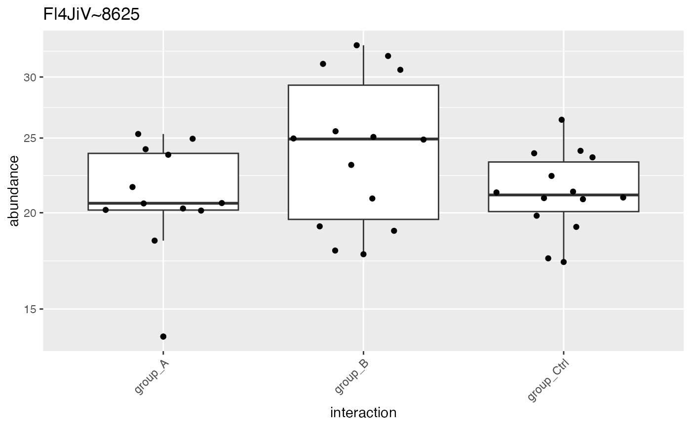

generates peptide level plots for all Proteins
Source:R/tidyMS_plotting.R
plot_hierarchies_boxplot_df.Rdgenerates peptide level plots for all Proteins
plot_hierarchies_boxplot_df( pdata, config, hierarchy = config$table$hkeysDepth(), facet_grid_on = NULL )
Arguments
| pdata | data.frame |
|---|---|
| config | AnalysisConfiguration |
| facet_grid_on | default NULL |
| hiearchy | e.g. protein_Id default hkeysDepth |
Examples
#>iostar$data <- iostar$data %>% dplyr::filter(protein_Id %in% sample(protein_Id, 2)) unique(iostar$data$protein_Id)#> [1] "sp|Q8WX92|NELFB_HUMAN~3628~Q8WX92" "sp|P49327|FAS_HUMAN~2032~P49327"res <- plot_hierarchies_boxplot_df(iostar$data,iostar$config) res$boxplot[[1]]#> Warning: Removed 22 rows containing non-finite values (stat_boxplot).#> Warning: Removed 22 rows containing missing values (position_quasirandom).res <- plot_hierarchies_boxplot_df(iostar$data,iostar$config,iostar$config$table$hierarchyKeys()[1]) res$boxplot[[1]]#> Warning: Removed 22 rows containing non-finite values (stat_boxplot).#> Warning: Removed 22 rows containing missing values (position_quasirandom).res <- plot_hierarchies_boxplot_df(iostar$data,iostar$config, iostar$config$table$hierarchyKeys()[1], facet_grid_on = iostar$config$table$hierarchyKeys()[2]) res$boxplot[[1]]#> Warning: Removed 22 rows containing non-finite values (stat_boxplot).#> Warning: Removed 4 rows containing missing values (position_quasirandom).#> Warning: Removed 18 rows containing missing values (position_quasirandom).#> Warning: The default behavior of beeswarm has changed in version 0.6.0. In versions <0.6.0, this plot would have been dodged on the y-axis. In versions >=0.6.0, grouponX=FALSE must be explicitly set to group on y-axis. Please set grouponX=TRUE/FALSE to avoid this warning and ensure proper axis choice.iostar <- LFQService::dataIonstarProtein_subsetNorm iostar$data <- iostar$data %>% dplyr::filter(protein_Id %in% sample(protein_Id, 100)) unique(iostar$data$protein_Id)#> [1] "sp|Q9NZM3|ITSN2_HUMAN~4539~Q9NZM3" "sp|P0AG78|SUBI_ECOLI~1278~P0AG78" #> [3] "sp|P0A908|MIPA_ECOLI~1035~P0A908" "sp|Q13838|DX39B_HUMAN~2788~Q13838" #> [5] "sp|Q9Y2W2|WBP11_HUMAN~4806~Q9Y2W2" "sp|O00148|DX39A_HUMAN~156~O00148" #> [7] "sp|Q99985|SEM3C_HUMAN~3972~Q99985" "sp|P41252|SYIC_HUMAN~1922~P41252" #> [9] "sp|P20042|IF2B_HUMAN~1495~P20042" "sp|P0A6L2|DAPA_ECOLI~914~P0A6L2" #> [11] "sp|P50570|DYN2_HUMAN~2086~P50570" "sp|Q58FF8|H90B2_HUMAN~3080~Q58FF8" #> [13] "sp|Q96KG9|SCYL1_HUMAN~3853~Q96KG9" "sp|Q9UBI1|COMD3_HUMAN~4592~Q9UBI1" #> [15] "sp|P19367|HXK1_HUMAN~1483~P19367" "sp|Q99613|EIF3C_HUMAN~3943~Q99613" #> [17] "sp|Q8IWA0|WDR75_HUMAN~3400~Q8IWA0" "sp|Q07020|RL18_HUMAN~2610~Q07020" #> [19] "sp|Q8N556|AFAP1_HUMAN~3472~Q8N556" "sp|P0AGJ5|YFIF_ECOLI~1292~P0AGJ5" #> [21] "sp|Q969X6|UTP4_HUMAN~3720~Q969X6" "sp|Q15813|TBCE_HUMAN~2967~Q15813" #> [23] "sp|Q00169|PIPNA_HUMAN~2530~Q00169" "sp|Q15392|DHC24_HUMAN~2927~Q15392" #> [25] "sp|O60645|EXOC3_HUMAN~416~O60645" "sp|Q03252|LMNB2_HUMAN~2579~Q03252" #> [27] "sp|P31943|HNRH1_HUMAN~1750~P31943" "sp|Q9UNE7|CHIP_HUMAN~4732~Q9UNE7" #> [29] "sp|O15511|ARPC5_HUMAN~313~O15511" "sp|Q9UGV2|NDRG3_HUMAN~4627~Q9UGV2" #> [31] "sp|P08238|HS90B_HUMAN~837~P08238" "CON__Q28107~41~NA" #> [33] "sp|Q7Z2Z2|EFL1_HUMAN~3299~Q7Z2Z2" "sp|Q6PL18|ATAD2_HUMAN~3230~Q6PL18" #> [35] "sp|P0ACW6|YDCH_ECOLI~1162~P0ACW6" "sp|P80723|BASP1_HUMAN~2497~P80723" #> [37] "sp|P0AG80|UGPB_ECOLI~1279~P0AG80" "sp|P48449|ERG7_HUMAN~2006~P48449" #> [39] "sp|Q9H223|EHD4_HUMAN~4215~Q9H223" "sp|P23141|EST1_HUMAN~1558~P23141" #> [41] "sp|Q06481|APLP2_HUMAN~2605~Q06481" "sp|Q14160|SCRIB_HUMAN~2814~Q14160" #> [43] "sp|P27797|CALR_HUMAN~1653~P27797" "sp|Q15257|PTPA_HUMAN~2912~Q15257" #> [45] "sp|P07951|TPM2_HUMAN~829~P07951" "sp|O14745|NHRF1_HUMAN~240~O14745" #> [47] "sp|P24534|EF1B_HUMAN~1590~P24534" "sp|P28062|PSB8_HUMAN~1657~P28062" #> [49] "sp|O95373|IPO7_HUMAN~600~O95373" "sp|P18754|RCC1_HUMAN~1475~P18754" #> [51] "sp|Q9BRA2|TXD17_HUMAN~3999~Q9BRA2" "sp|Q8WVV9|HNRLL_HUMAN~3618~Q8WVV9" #> [53] "sp|Q14146|URB2_HUMAN~2808~Q14146" "sp|P0AFL3|PPIA_ECOLI~1254~P0AFL3" #> [55] "sp|P25516|ACNA_ECOLI~1604~P25516" "sp|Q08752|PPID_HUMAN~2629~Q08752" #> [57] "sp|P28370|SMCA1_HUMAN~1669~P28370" "sp|P68133|ACTS_HUMAN~2407~P68133" #> [59] "sp|Q8WX92|NELFB_HUMAN~3628~Q8WX92" "sp|P20810|ICAL_HUMAN~1506~P20810" #> [61] "sp|P0A6P1|EFTS_ECOLI~918~P0A6P1" "CON__P34955~32~NA" #> [63] "sp|Q13162|PRDX4_HUMAN~2704~Q13162" "sp|Q9BPX5|ARP5L_HUMAN~3977~Q9BPX5" #> [65] "sp|L0R819|ASURF_HUMAN~152~L0R819" "sp|Q13131|AAPK1_HUMAN~2695~Q13131" #> [67] "sp|P0A7R9|RS11_ECOLI~974~P0A7R9" "sp|Q9UJW0|DCTN4_HUMAN~4671~Q9UJW0" #> [69] "sp|O60220|TIM8A_HUMAN~391~O60220" "sp|P60709|ACTB_HUMAN~2242~P60709" #> [71] "sp|Q96C90|PP14B_HUMAN~3749~Q96C90" "sp|Q92620|PRP16_HUMAN~3664~Q92620" #> [73] "sp|P37744|RMLA1_ECOLI~1860~P37744" "sp|Q8N6R0|EFNMT_HUMAN~3486~Q8N6R0" #> [75] "sp|P0AGE0|SSB_ECOLI~1287~P0AGE0" "sp|P49821|NDUV1_HUMAN~2067~P49821" #> [77] "sp|Q96CV9|OPTN_HUMAN~3755~Q96CV9"res <- plot_hierarchies_boxplot_df(iostar$data,iostar$config) res$boxplot[[1]]#> Warning: Removed 3 rows containing non-finite values (stat_boxplot).#> Warning: Removed 3 rows containing missing values (position_quasirandom).res <- plot_hierarchies_boxplot_df(iostar$data,iostar$config, iostar$config$table$hierarchyKeys()[1]) res$boxplot[[1]]#> Warning: Removed 3 rows containing non-finite values (stat_boxplot).#> Warning: Removed 3 rows containing missing values (position_quasirandom).res <- plot_hierarchies_boxplot_df(iostar$data,iostar$config, iostar$config$table$hierarchyKeys()[1], facet_grid_on = iostar$config$table$hierarchyKeys()[2]) res$boxplot[[1]]#> Warning: Removed 3 rows containing non-finite values (stat_boxplot).#> Warning: Removed 3 rows containing missing values (position_quasirandom).